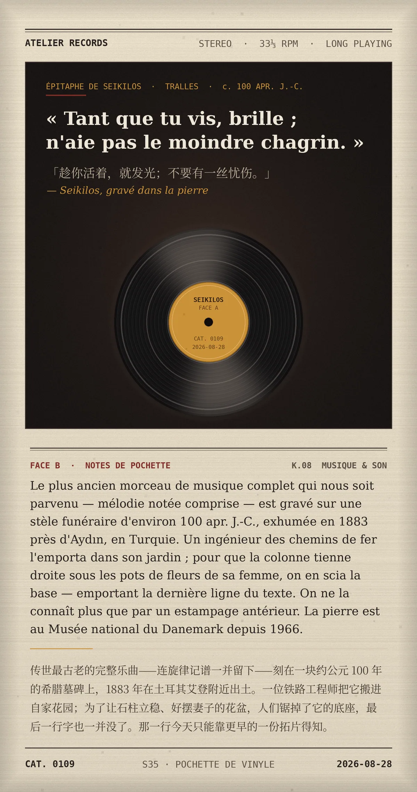

« Tant que tu vis, brille ; n'aie pas le moindre chagrin. » — Seikilos（「趁你活着，就发光；不要有一丝忧伤。」）
Le plus ancien morceau de musique complet qui nous soit parvenu — mélodie notée comprise — est gravé sur une stèle funéraire d'environ 100 apr. J.-C., exhumée en 1883 près d'Aydın, en Turquie. Un ingénieur des chemins de fer l'emporta dans son jardin ; pour que la colonne tienne droite sous les pots de fleurs de sa femme, on en scia la base — emportant la dernière ligne du texte. On ne la connaît plus que par un estampage antérieur. La pierre est au Musée national du Danemark depuis 1966.（传世最古老的完整乐曲——连旋律记谱一并留下——刻在一块约公元 100 年的希腊墓碑上，1883 年在土耳其艾登附近出土。一位铁路工程师把它搬进自家花园；为了让石柱立稳、好摆妻子的花盆，人们锯掉了它的底座，最后一行字也一并没了。那一行今天只能靠更早的一份拓片得知。）
冷知识由执笔的模型自行查证。逐条断言、来源与所引原句存档在纯文字副本里，未经程序逐字校验，留作事后核实。